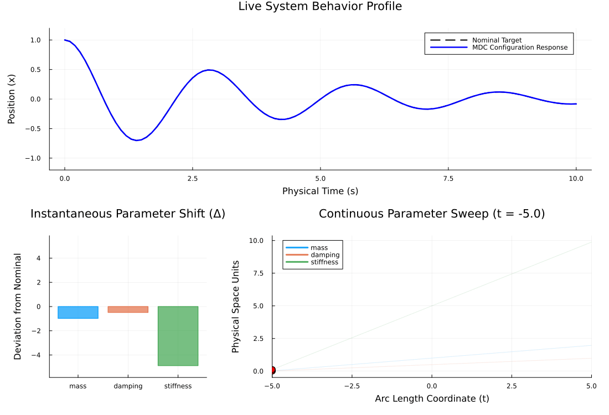

ENV["GKSwstype"] = "100";Basic Mass-Spring System
This example shows how Minimally Disruptive Curves (MDC) finds a structural unidentifiability in the basic damped harmonic oscillator model (where m is mass, c is damping, and k is the spring constant). We will see that the trajectory doesn't vary where the ratios c/m and k/m remain constant. This is obvious algebraically, as the equations are $\dot{v} = -(c/m)v - (k/m)x$.
This script does not explore how to initialise a good starting MDC direction. We make a lucky guess here. That's the topic of the next Lotka-Volterra example (and the NFKB example)
using LinearAlgebra, OrdinaryDiffEq, MinimallyDisruptiveCurves, Plots
using ForwardDiffSimulator
We define the standard 2D mass-spring-damper vector field: $\dot{x} = v$, $\dot{v} = -(c/m)v - (k/m)x$.
function mass_spring_dynamics!(du, u, p, t)
m, c, k = p
position, velocity = u[1], u[2]
du[1] = velocity
du[2] = -(c / m) * velocity - (k / m) * position
return nothing
endmass_spring_dynamics! (generic function with 1 method)Dynamic Cost Function Factory
This factory generates a CostFunction instance. It pre-computes a reference trajectory using θ_nominal and evaluates the Mean Squared Error (MSE) deviation for any test parameter vector θ.
function make_mse_cost_function(θ_nominal; u0 = [1.0, 0.0], tspan = (0.0, 10.0), dt = 0.1)
#1. Generate the immutable reference trajectory data
prob_nominal = ODEProblem(mass_spring_dynamics!, u0, tspan, θ_nominal)
sol_nominal = solve(prob_nominal, Tsit5(), saveat = dt)
target_times = sol_nominal.t
target_positions = [sol[1] for sol in sol_nominal.u]
#2. Define the objective function closure (f)
function f(θ)
if any(θ .<= 1.0e-3)
#Ensure the penalty return type matches the input dual/real element type
return 100.0 + sum(abs2, min.(zero(eltype(θ)), θ))
end
prob = ODEProblem(mass_spring_dynamics!, u0, tspan, θ)
sol = solve(prob, Tsit5(), saveat = target_times)
current_positions = [s[1] for s in sol.u]
return sum(abs2, current_positions .- target_positions) / length(target_times)
end
#3. Define the exact Automatic Differentiation gradient closure (grad!)
function grad!(g, θ)
ForwardDiff.gradient!(g, f, θ)
return g
end
return CostFunction(f, grad!)
endmake_mse_cost_function (generic function with 1 method)Execution Pipeline
Let's define our base system nominal profile and instantiate the MDC System.
θ_nominal = [1.0, 0.5, 5.0] #m = 1.0, c = 0.5, k = 5.0
dθ_nominal = θ_nominal #Lucky guess for initial direction
u0_physical = [1.0, 0.0] #Initial position=1, velocity=0
tspan_physical = (0.0, 10.0) #Observe for 10 seconds(0.0, 10.0)Build the Cost Function mapping parameter variants against the baseline
core_cost = make_mse_cost_function(θ_nominal, u0 = u0_physical, tspan = tspan_physical)CostFunction{Main.var"#f#6"{Vector{Float64}, Tuple{Float64, Float64}, Vector{Float64}, Vector{Float64}}, Main.var"#grad!#9"{Main.var"#f#6"{Vector{Float64}, Tuple{Float64, Float64}, Vector{Float64}, Vector{Float64}}}, Nothing}(Main.var"#f#6"{Vector{Float64}, Tuple{Float64, Float64}, Vector{Float64}, Vector{Float64}}([1.0, 0.0], (0.0, 10.0), [1.0, 0.9755134583699442, 0.904842726590233, 0.7936721967307147, 0.649376884738368, 0.48058024182482734, 0.2966739509413257, 0.10732886393959679, -0.07799393312870152, -0.2504935966407592 … 0.031625811578573276, 0.00891660527691038, -0.013110762248050708, -0.03342631948156288, -0.05113045390720225, -0.06549090180218642, -0.07596419731606183, -0.08223390080044216, -0.08420817226722992, -0.08199595449006322], [0.0, 0.1, 0.2, 0.3, 0.4, 0.5, 0.6, 0.7, 0.8, 0.9 … 9.1, 9.2, 9.3, 9.4, 9.5, 9.6, 9.7, 9.8, 9.9, 10.0]), Main.var"#grad!#9"{Main.var"#f#6"{Vector{Float64}, Tuple{Float64, Float64}, Vector{Float64}, Vector{Float64}}}(Main.var"#f#6"{Vector{Float64}, Tuple{Float64, Float64}, Vector{Float64}, Vector{Float64}}([1.0, 0.0], (0.0, 10.0), [1.0, 0.9755134583699442, 0.904842726590233, 0.7936721967307147, 0.649376884738368, 0.48058024182482734, 0.2966739509413257, 0.10732886393959679, -0.07799393312870152, -0.2504935966407592 … 0.031625811578573276, 0.00891660527691038, -0.013110762248050708, -0.03342631948156288, -0.05113045390720225, -0.06549090180218642, -0.07596419731606183, -0.08223390080044216, -0.08420817226722992, -0.08199595449006322], [0.0, 0.1, 0.2, 0.3, 0.4, 0.5, 0.6, 0.7, 0.8, 0.9 … 9.1, 9.2, 9.3, 9.4, 9.5, 9.6, 9.7, 9.8, 9.9, 10.0])), nothing)Wire up the Transform Chain (empty in this case, and could directly pass core_cost to the MDCProblem)
chain = TransformChain()
transformed_cost = TransformedCost(core_cost, chain)TransformedCost{CostFunction{Main.var"#f#6"{Vector{Float64}, Tuple{Float64, Float64}, Vector{Float64}, Vector{Float64}}, Main.var"#grad!#9"{Main.var"#f#6"{Vector{Float64}, Tuple{Float64, Float64}, Vector{Float64}, Vector{Float64}}}, Nothing}, TransformChain{Tuple{}}}(CostFunction{Main.var"#f#6"{Vector{Float64}, Tuple{Float64, Float64}, Vector{Float64}, Vector{Float64}}, Main.var"#grad!#9"{Main.var"#f#6"{Vector{Float64}, Tuple{Float64, Float64}, Vector{Float64}, Vector{Float64}}}, Nothing}(Main.var"#f#6"{Vector{Float64}, Tuple{Float64, Float64}, Vector{Float64}, Vector{Float64}}([1.0, 0.0], (0.0, 10.0), [1.0, 0.9755134583699442, 0.904842726590233, 0.7936721967307147, 0.649376884738368, 0.48058024182482734, 0.2966739509413257, 0.10732886393959679, -0.07799393312870152, -0.2504935966407592 … 0.031625811578573276, 0.00891660527691038, -0.013110762248050708, -0.03342631948156288, -0.05113045390720225, -0.06549090180218642, -0.07596419731606183, -0.08223390080044216, -0.08420817226722992, -0.08199595449006322], [0.0, 0.1, 0.2, 0.3, 0.4, 0.5, 0.6, 0.7, 0.8, 0.9 … 9.1, 9.2, 9.3, 9.4, 9.5, 9.6, 9.7, 9.8, 9.9, 10.0]), Main.var"#grad!#9"{Main.var"#f#6"{Vector{Float64}, Tuple{Float64, Float64}, Vector{Float64}, Vector{Float64}}}(Main.var"#f#6"{Vector{Float64}, Tuple{Float64, Float64}, Vector{Float64}, Vector{Float64}}([1.0, 0.0], (0.0, 10.0), [1.0, 0.9755134583699442, 0.904842726590233, 0.7936721967307147, 0.649376884738368, 0.48058024182482734, 0.2966739509413257, 0.10732886393959679, -0.07799393312870152, -0.2504935966407592 … 0.031625811578573276, 0.00891660527691038, -0.013110762248050708, -0.03342631948156288, -0.05113045390720225, -0.06549090180218642, -0.07596419731606183, -0.08223390080044216, -0.08420817226722992, -0.08199595449006322], [0.0, 0.1, 0.2, 0.3, 0.4, 0.5, 0.6, 0.7, 0.8, 0.9 … 9.1, 9.2, 9.3, 9.4, 9.5, 9.6, 9.7, 9.8, 9.9, 10.0])), nothing), TransformChain{Tuple{}}(()))Instantiate the MDC System
θ₀ = θ_nominal
dθ₀ = θ_nominal
H = 1.0 #Hamiltonian: think of as momentum of the trajectory
sys = MDCProblem(transformed_cost, θ₀, dθ₀, H; names = [:mass, :damping, :stiffness])MDCProblem with Parameters: 3, Momentum cap (H): 1.0Setup the standard stability callback and solve
stabilizer = mdc_momentum_readjustment(sys; tol = 1.0e-3)
my_pipeline = CallbackSet(stabilizer)
mdc_curves = MDCSolve(sys, span = MDCSpan(-5.0, 5.0), callback = my_pipeline; mode = :fast)Minimally Disruptive Curve (MDCSolution)
====================================
• Parameter Dimensions : 3
• Explored Span : [-5.0 ↔ 5.0] (Arc length)
• Initial Cost (C₀) : 0.0
• Total Energy (H) : 1.0
• Max Parameter Shifts :
mass : [0.024 ↔ 1.976]
damping : [0.012 ↔ 0.988]
stiffness : [0.12 ↔ 9.879]
Verification & Analysis
Let's inspect the parameters discovered at the endpoint of the curve.
final_state = mdc_curves.negative_sol.u[end]
θ_explored = final_state[1:3]
println("Initial Params (θ₀): ", round.(θ₀, digits = 4))
println("Explored Params (MDC End): ", round.(θ_explored, digits = 4))
println("\nValidating Ratio Preservation:")
println("Initial c/m: ", round(θ₀[2] / θ₀[1], digits = 4), " | Explored c/m: ", round(θ_explored[2] / θ_explored[1], digits = 4))
println("Initial k/m: ", round(θ₀[3] / θ₀[1], digits = 4), " | Explored k/m: ", round(θ_explored[3] / θ_explored[1], digits = 4))Initial Params (θ₀): [1.0, 0.5, 5.0]
Explored Params (MDC End): [0.0241, 0.0121, 0.1205]
Validating Ratio Preservation:
Initial c/m: 0.5 | Explored c/m: 0.5
Initial k/m: 5.0 | Explored k/m: 4.9992Calculate the exact MSE cost at the terminal point of our parameter path
final_cost = core_cost.f(θ_explored)
println("\nMSE Cost Relative to Nominal Trajectory: ", round(final_cost, digits = 7))
MSE Cost Relative to Nominal Trajectory: 0.0Animation Custom Visualization
We can define a custom visualization function to pass to animate_mdc, which paints directly onto the plot canvas at each frame.
function animate_system_response(θ_current)
u0 = [1.0, 0.0]
tspan = (0.0, 10.0)
dt = 0.1
prob_nominal = ODEProblem(mass_spring_dynamics!, u0, tspan, θ_nominal)
sol_nominal = solve(prob_nominal, Tsit5(), saveat = dt)
prob_current = ODEProblem(mass_spring_dynamics!, u0, tspan, θ_current)
sol_current = solve(prob_current, Tsit5(), saveat = dt)
pos_nominal = [u[1] for u in sol_nominal.u]
pos_current = [u[1] for u in sol_current.u]
#Plot the ground-truth nominal response as a static dashed black line
Plots.plot!(
sol_nominal.t, pos_nominal,
subplot = 1,
line = (:black, :dash),
linewidth = 2,
label = "Nominal Target"
)
#Overlay the explored parameter trajectory response in solid blue
return Plots.plot!(
sol_current.t, pos_current,
subplot = 1,
color = :blue,
linewidth = 2.5,
label = "MDC Configuration Response",
xlabel = "Physical Time (s)",
ylabel = "Position (x)",
ylim = (-1.2, 1.2)
)
endanimate_system_response (generic function with 1 method)Animation
We can generate an animation using animate_mdc and save it as a gif:
anim = animate_mdc(mdc_curves, animate_system_response; density = 100, fps = 15, raw = true)
gif(anim, "mass_spring_mdc_sweep.gif", fps = 15);[ Info: Saved animation to /home/runner/_work/MinimallyDisruptiveCurves.jl/MinimallyDisruptiveCurves.jl/docs/build/examples/mass_spring_mdc_sweep.gif
This page was generated using Literate.jl.